bb0nu · Electronics response
- TopMetal pitch 3 mm; ion buckets 20 ms.
- SiPMs pitch 4 mm; ASIC buckets 250 ns.
- ADC: 12 bits, 0–1.8 V, 100 μs sampling; additional input noise zero.
- Baseline 10 ms before induced current; final sampling 5 ms after collection.
Events and timing
Times cover electronics processing; the first event includes compilation. Every channel in the frame is simulated.
| Event | Pads | ADC samples/pad | SiPMs | Buckets/SiPM | CSA + ADC (s) | SiPM + ASIC (s) | Nonlinear pads | ADC out of range | ASIC clipped buckets |
|---|---|---|---|---|---|---|---|---|---|
| 0 | 832 | 7768 | 480 | 730 | 0.636 | 0.262 | 2 | 0 | 0 |
| 3 | 552 | 5168 | 324 | 484 | 0.387 | 0.184 | 2 | 0 | 0 |
| 4 | 720 | 5368 | 414 | 514 | 0.403 | 0.316 | 1 | 0 | 0 |
| 6 | 589 | 5168 | 345 | 480 | 0.306 | 0.188 | 4 | 0 | 0 |
| 7 | 600 | 6368 | 342 | 599 | 0.462 | 0.191 | 1 | 0 | 0 |
Mean processing time after the first event: CSA + ADC 0.389 s/event; SiPM + ASIC 0.220 s/event.
Noise optimisation
Mean CSA + ADC time after the first event: 1.701 → 0.389 s/event (4.37× faster). Same five events and channels.
The noiseless ion examples and SiPM examples are unchanged. Individual ion noise vectors differ because the sampler changed; their covariance is preserved.
Noise alone, 552 pads with 5168 samples each: 1.1175 → 0.0326 s (34.3× faster). FFT length: 131072 → 16384.
Validation
| Quantity | Value |
|---|---|
| Maximum linear voltage residual against SPICE | 2.12321e-07 V |
| Maximum nonlinear voltage residual against SPICE | 4.16952e-05 V |
| Nonlinear SPICE cases | 24 |
| Maximum short-lag covariance error / variance | 3.49955e-10 |
| CSA voltage-noise RMS before filtering | 0.0311905 V |
The raw voltage noise includes slowly varying components. Its RMS is not the reconstructed ion uncertainty.
Example pad and SiPM vectors
For each event, show the channel with the largest input and a channel with zero input, when present. Ion times are relative to the first ADC sample; SiPM times are relative to the first photon bucket. The vectors retain their event-t0 offsets in memory.
Event 0
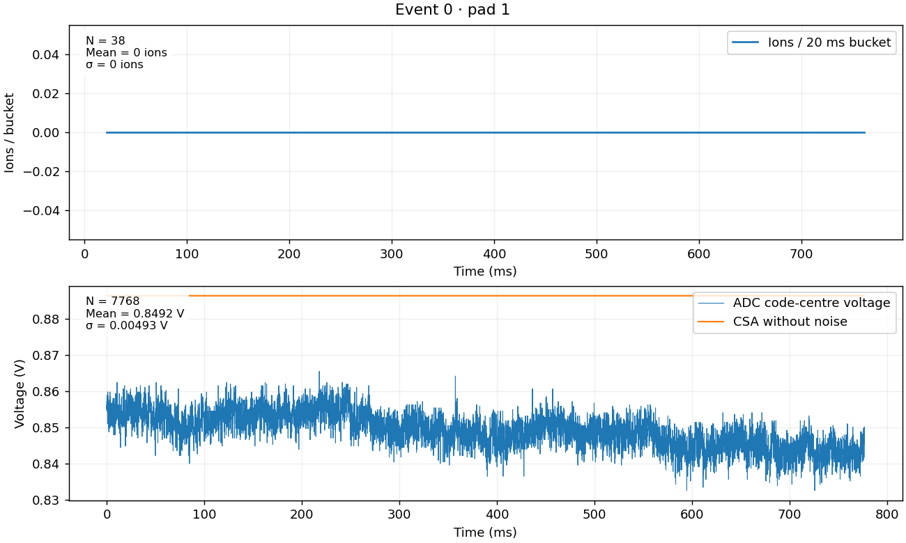
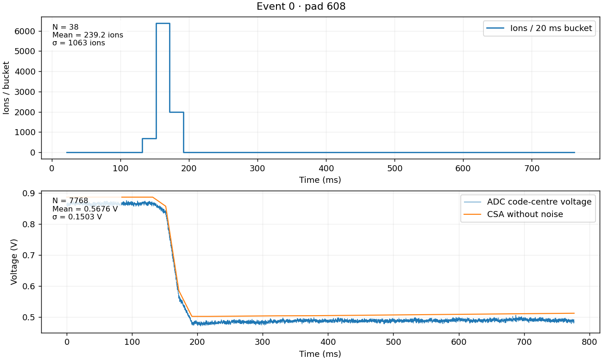

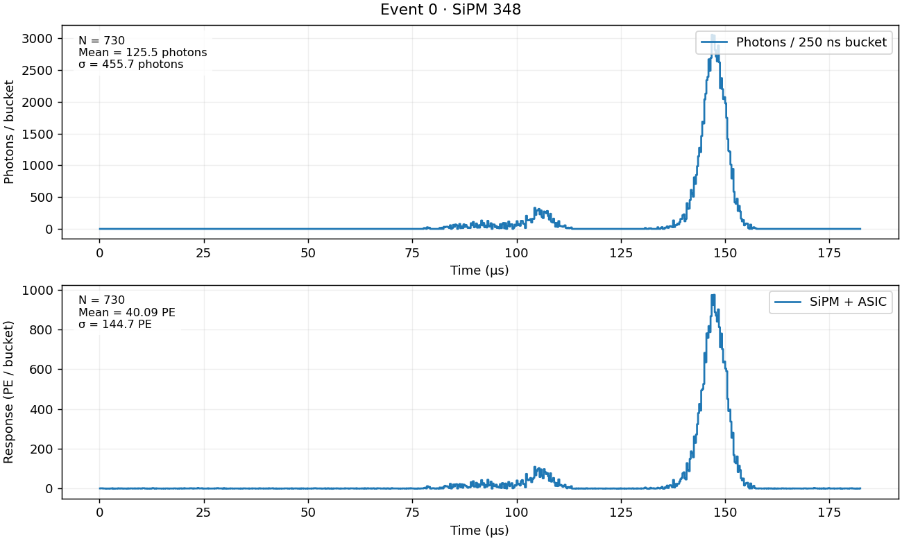
Event 3
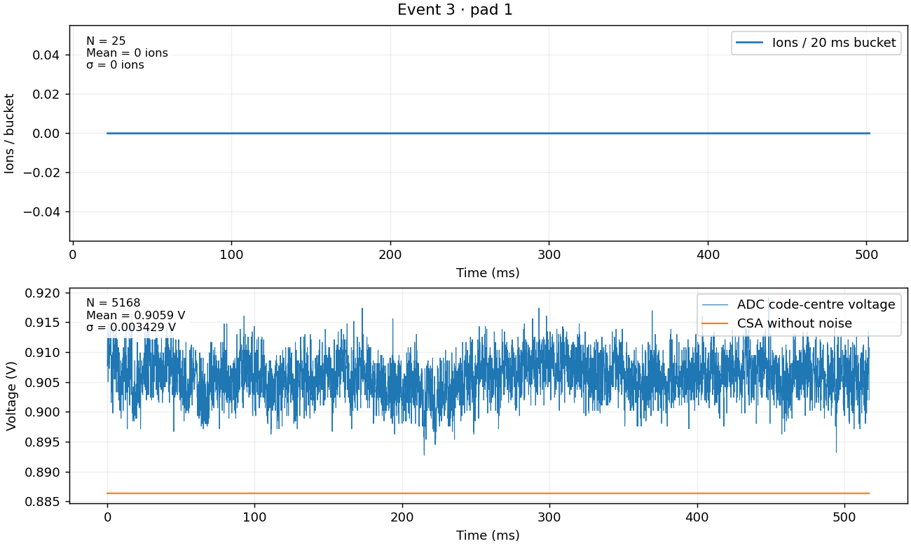
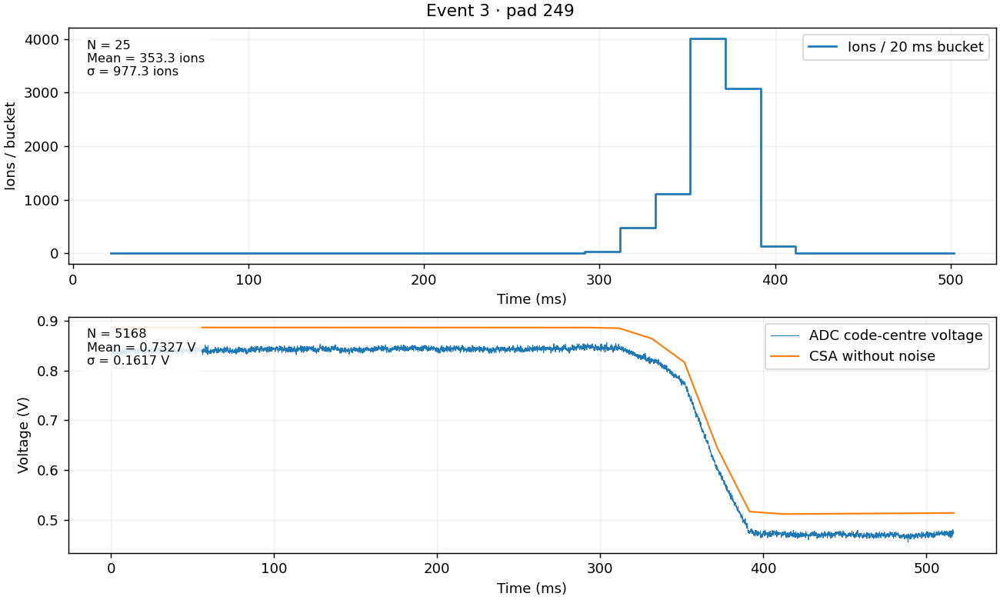
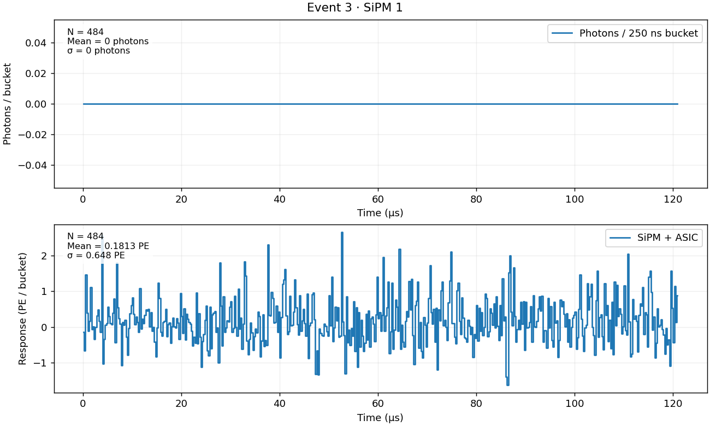
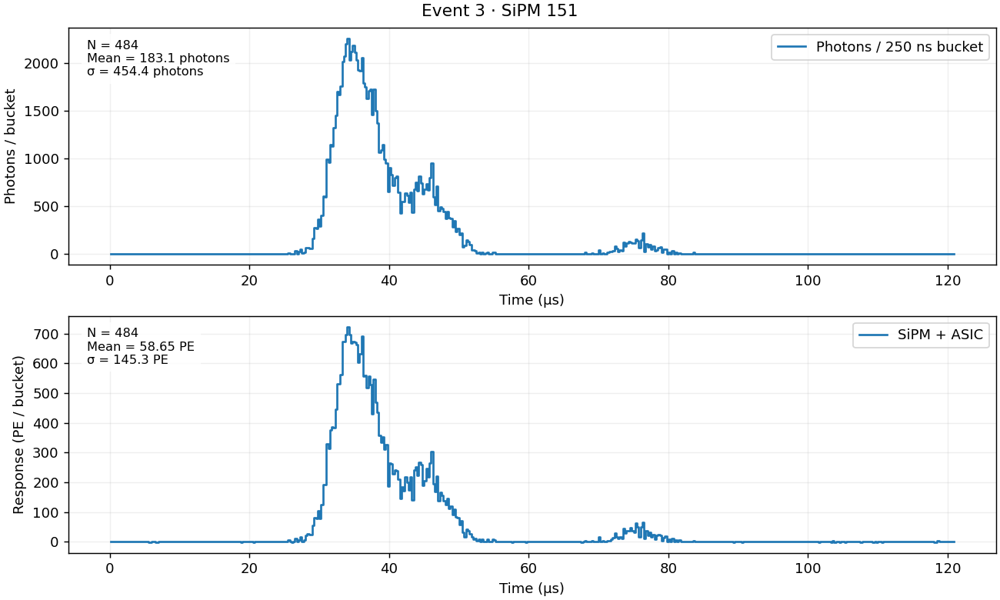
Event 4

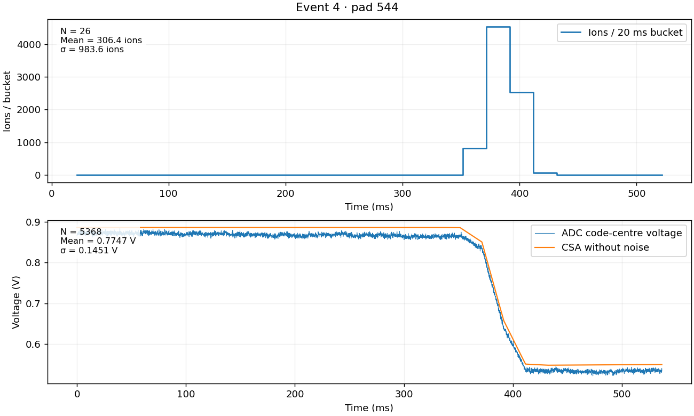

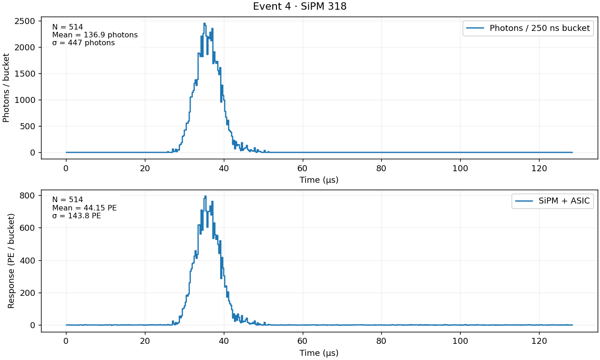
Event 6

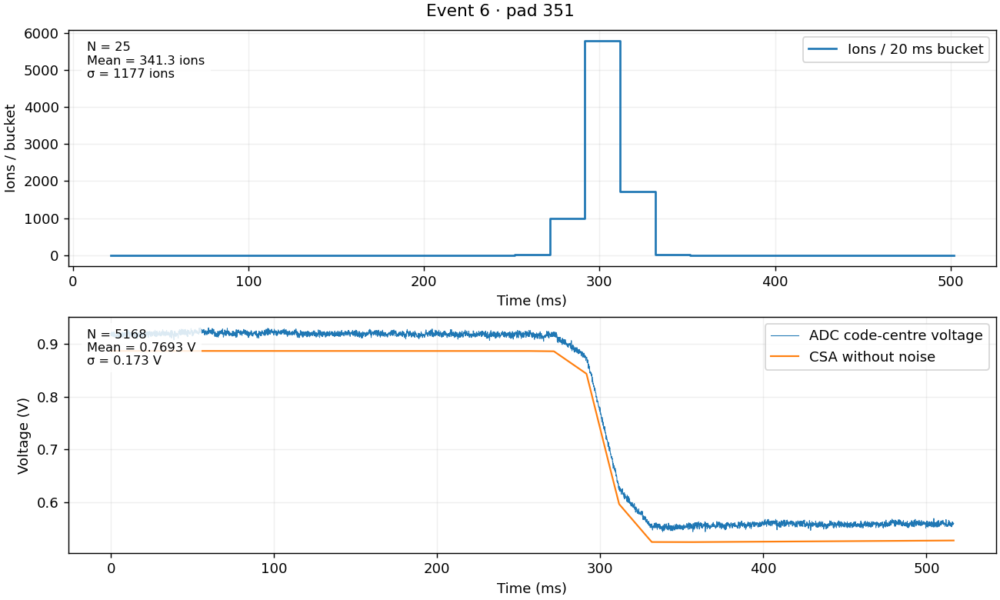


Event 7

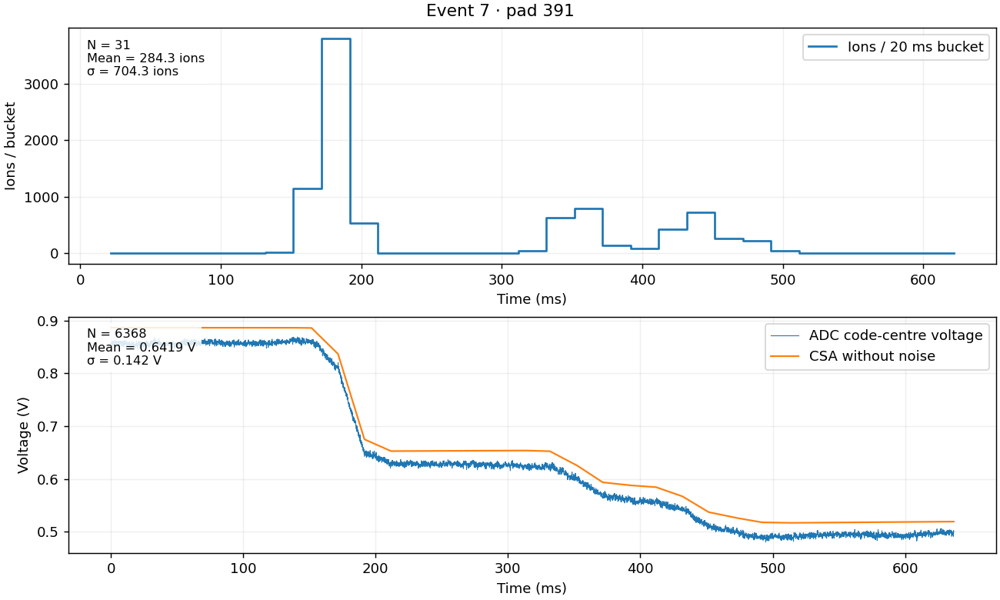
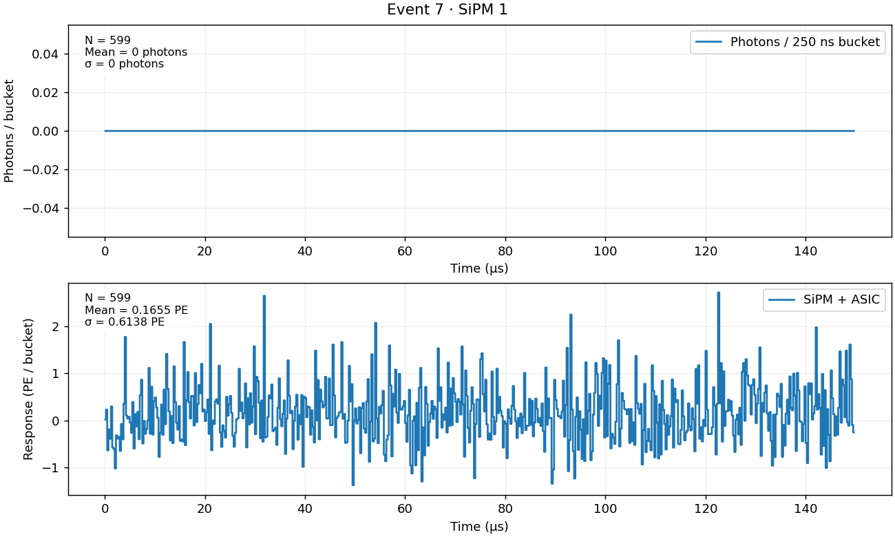
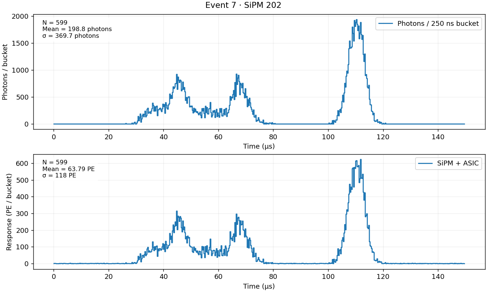
Noise examples
ADC voltage minus simulated noiseless voltage includes CSA noise and quantisation. SiPM examples have zero input photons and include dark activity and ASIC noise.

Output vector sizes
| Event | ADC vectors (MiB) | ASIC vectors and flags (MiB) |
|---|---|---|
| 0 | 12.33 | 1.38 |
| 3 | 5.44 | 0.62 |
| 4 | 7.37 | 0.84 |
| 6 | 5.81 | 0.65 |
| 7 | 7.29 | 0.81 |
Full event vectors remain in memory. Saved controls contain summaries and selected channel examples.